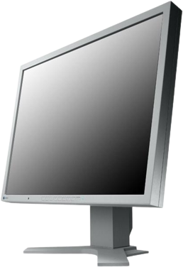

The monitor is a peripheral output device for luminous graphic display of data and images, commonly used in telecommunications installations and data processing technology. Data is represented by characters and symbols. From a constructive point of view, monitors were originally televisions without the ability to receive TV signals.
Caracteristici:
Screen type:
Multiple technologies have been used for computer monitors. Until the 21st century, the most used were CRT (Cathode Ray Tube - Cathodic Tube), but these have largely been replaced by LCD monitors u> (Liquid Crystal Diode – Liquid Crystals).
There are two types of LCD screens: Passive LCD – produces poor contrast, high response time and other image defects. It was used in most notebook computers until the mid-90s - and TFT LCD - renders the image with much better quality, almost all modern LCDs are TFT.

The diagonal:
Initially, the diagonal dimensions of the tubes used were small: 8, 9, 10, 12, 14, 15 inches. Currently, common CRT (electronic tube) monitor sizes are 15, 17, 19, 20, 21, 22, 24 or even 27 inches.
The areal size of a screen is frequently determined by the distance between two opposite corners of it. It is a problem, however, that the measurement method does not distinguish between the exact geometric shapes of monitors with identical diagonal sizes, in the sense that the area determined by a diagonal decreases (compared to square ones), the more rectangular the screens become. For example, a 4:3 21" monitor has an area of ~211 square inches, while a 16:9 21" has an area of only ~188 square inches.
This relatively imprecise measurement method dates back to the early versions of the CRT TV when round tubes were in common use. They had a single dimension that described the size of the screen. When round tubes were used to display rectangular images, the size of the diagonal was equivalent to the diameter of the tube.
The resolution:
The information is displayed on an orthogonal grid system of dots (pixels) forming the possible working resolution. Common values for resolution (width x height) are:
- 640x480
- 800x600
- 1024x768
- 1280x1024
- 1600x1200
- 1920x1080
Other specifications:
- Brightness (measured in candelas per square meter cd/m2)
- Refresh rate (describes the number of screen illuminations, in one second. The maximum refresh rate is limited by the response time)
- Response time (the time required for a pixel to go from the active –black– state to the inactive –white– state and to the active , again –black–. It is measured in milliseconds)
- Contrast ratio (the ratio between the brightness of the brightest color –white– and the darkest color –black–, which the screen is capable of producing them)
- Power consumption (energy, measured in watts)
- Aspect ratio (horizontal length compared to vertical. 4:3 is the standard aspect ratio, a screen 1024 pixels long will be 768 pixels high; a widescreen can have 16:9 aspect ratio, a screen 1024 pixels long will be 576 pixels high)
- Viewing angle (the ability of the screen to be viewed from an angle other than 90° without excessive image degradation occurring, measured in degrees, horizontal and vertical)